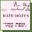
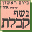
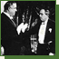
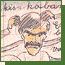
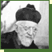
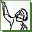
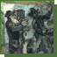

| 1920s | József Patai (1882–1953) | |
| 1920 |  | Mózes Ráth, The Textbook of the Hebrew Language (Vienna, 1920) |
| 1921 | André Kertész (1894–1985), Blind Musician | |
| 1931 |  | Notice of the Palestinian Pen Club and the Union of Hebrew Writers |
| 1931 |  | Hyppolit, the Lackey |
| 1932 | The inauguration of the Jewish Secondary School in Budapest | |
| 1933 | Imre Ámos (1907–1944/45), Sukkot | |
| 1935 |  | Let there be a bit of cabaret! |
| late 1930s |
 | The actor Oszkár Beregi (1876–1965/66) and Rabbi Immánuel Löw (1854–1944) |
| 1939 | Artists’ action by the National Hungarian Jewish Cultural Association | |
| 1940s | The Korda brothers | |
| 1940s | László Moholy-Nagy (Weiss) (1895–1946), View from above |
|
| 1940 |  | Imre Ámos (1907–1944/45), Chanukkah |
| 1943 |  | Lipót Herman (1884–1972), Purim |
| 1944 | Robert Capa (1913–1954), Liberation of Paris III | |